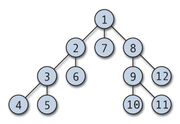

Maths All Around
 This is a learning
resource page for "Discovering Maths".
This is a learning
resource page for "Discovering Maths".
It is independent of any particular module or programme.
In particular the Leeds module
Math1210 Maths All Around is relevant.
1. What is "membership"?
-
Think about the notion of MEMBERSHIP,
and how it might connect maths to life...

-
We talk about `membership' and `belonging' in life.
Membership of the club or the gang or the team.
Being a passport holder.
Belonging (or not) to the group.
Classes of things, to which certain things belong.
Sameness and difference within a group. A notion of "shared ownership".
And these are all very interesting and complex topics. And important.
-
Can maths help us to get a handle on these ideas?
... Perhaps not! But we might learn something useful about maths
if we give it a try.
-
Maths, of course, has its own versions of membership:
If a number is an odd number then it is not an even number.
If an animal is a dog then it is not a cat.
Exercise: what does this mean? Discuss!
-
And the dictionary says something is a member of a class if...?
Sort yourself (if you can) into a group according to the following sequence of
criteria:
Female/Male;
Young/Old;
Religious/not;
Football fan/not;
Music fan/not;
...
Discuss!
-
-

-


Paul Martin (base=amsta)
Last Modified: JAN 2016